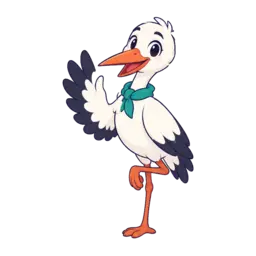
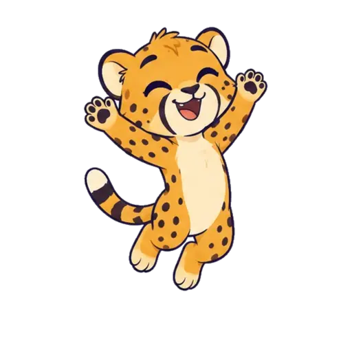
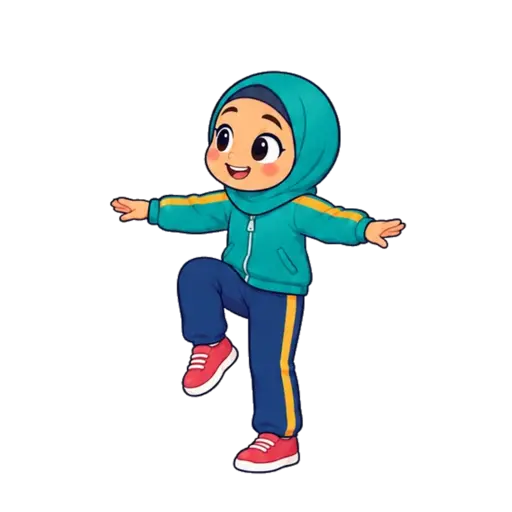
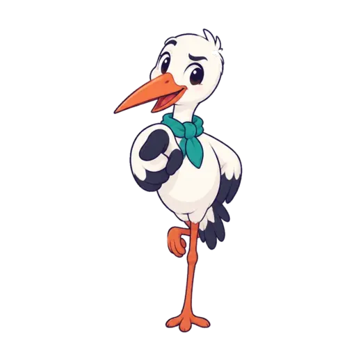
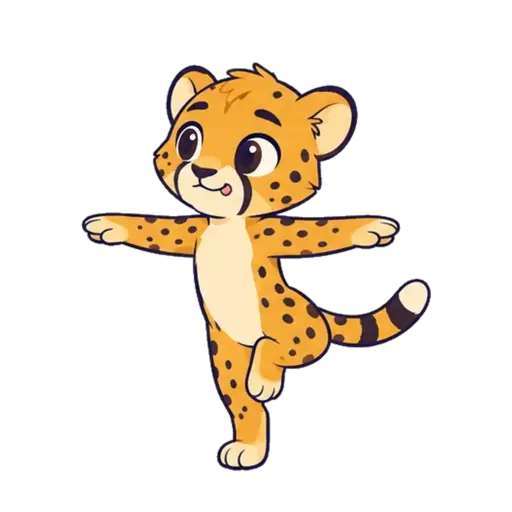

خوان سوم: پلِ لرزانمنزل ۵ و ۶ کتاب · تعادل، زندگی فعال

منزل ۵ · تعادل کتاب، ص ۳۳ تا ۳۷
منزل ۶ · زندگی فعال کتاب، ص ۳۹ تا ۴۳
تمرین ۱ از ۳تعادل · روز دوم
این بازی چطور بود؟
یکی از صورتکها را انتخاب کن

اشکال ندارد! هر بار که تمرین کنی، آسانتر میشود.

آفرین پهلوان!
مشعل روز دوم روشن شد. یک روز دیگر تا گذشتن از پلِ لرزان.
قصهٔ حرکتتاپتاپو و تعادل · کتاب، ص ۳۴
رکوردِ لکلکبازی کن و ستاره بگیر · کتاب، ص ۳۷


مثل لکلک روی یک پا بایست. بزرگترت «شروع» را بزند و وقتی پایت زمین خورد، «پایم زمین خورد» را.

دستمالبازیبازی خانوادگی منزل ۵ · کتاب، ص ۳۶
دست هم را بگیرید و روی یک پا حلقه بزنید. دستمال جلوی یک نفر روی زمین است. با آهنگ، هر کس دستمال را با انگشتهای پای دیگرش برمیدارد و جلوی نفر بعدی میگذارد. آهنگ که قطع شد، صاحب دستمال یک حرکت تعادلی انجام میدهد.
گنجینهیوزی و نشانهای خوانها
برای پدر و مادرهفتهٔ تعادل · منزل ۵
| تمرین | روز اول | روز دوم | روز سوم |
|---|
صورتکها را خودِ کودک بعد از هر تمرین انتخاب کرده است، مثل جدول «روز اول، دوم، سوم» در کتاب.
کتاب (ص ۳۷) میخواهد کودک هر روز مثل لکلک بایستد و هر بار که بیشتر از دفعهٔ قبل ایستاد، یک ستاره رنگ کند. اینجا زمان را گوشی میگیرد و ستاره خودش رنگ میشود.
- لطفاً فقط ناظر نباشید. با آنها همبازی شوید.
- از ایمنی فضای بازی و فعالیت کودک اطمینان حاصل کنید.
- وسایل موردنیاز برای بازی را فراهم و آمادهسازی نمایید.
- زمانی منظم و ثابت در طول هفته را به بازی و فعالیتهای آن اختصاص دهید.